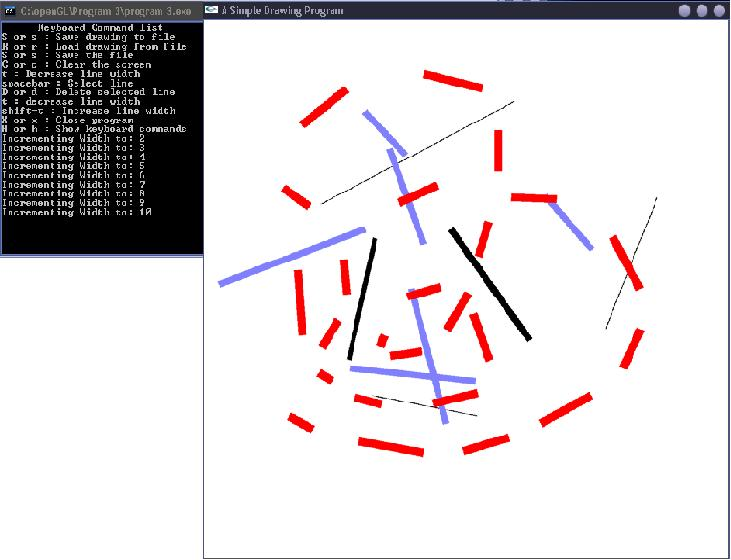

Painter
Program Description
This is an OpenGL program designed to a be a simple drawing application. Lines are drawn by using
the mouse. The color and the width of the line can be adjusted. In addition,
lines can be selected, moved, and deleted after their original creation, adding a flavor
of customization. The drawing panel can also be saved to a flat-file database, which makes clever
use of space-saving techniques.
Features
- Written in C++/OpenGL
- Decoupled OO approach
- Effective approach to new/delete paradigm
- Pointer Manipulation
- Flat-file database with space-saving algorithm
Sample Run
